MultiLayer Perceptron (MLP) neural networks
ML Laboratory 03
1 Objective
Students should understand and be able to use multi-layer fully-connected networks in Matlab
2 Theoretical aspects
Multi-layer perceptron (fully-connected) neural networks are widely used for classification of small, simple datasets.
2.1 Multilayer perceptron
Cascading neurons
Logistic regression = 1 neuron
A single neuron creates a single hyperplane and separates the input space in two categories (0 or 1)
- “neuron” = one logistic regression operation
- “hyperplane” = a linear boundary surface, with dimension N-1
- with a smooth sigmoid transition zone between the two classes
What if we have a dataset as follows? How to do classification here?
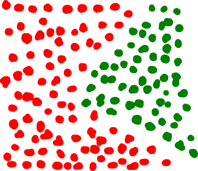
Solution: use two neurons:
- each one draws a hyperplane (a line)
- aggregate their results into the final outcome: “When both neurons say 1, output class is 1. Otherwise, output class is 0”.
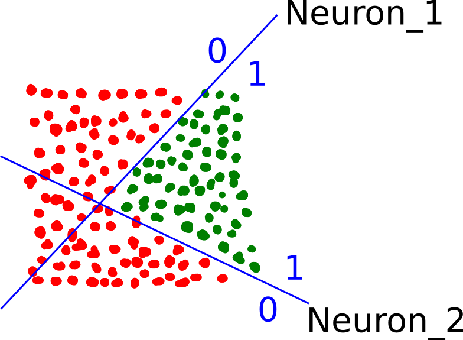
Combining the results of both neurons in the final result is also done with a (third) neuron. Thus, we have cascading neurons.
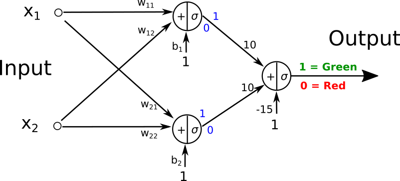
Neurons operating on the same inputs form a layer. We have two layers now:
- The inputs (this does not contain neurons, just the inputs, but it is commonly named “the input layer”)
- The hidden layer (middle)
- The output layer (the output neuron)
What if we want a boundary composed of 3 sides? Use three neurons in the hidden layer.
What if we want a curved boundary? Use many more neurons (approximate the curve from many lines)
Any hypersurface can be obtained with just two layers, provided there are enough neurons in the hidden layer:
- The hidden layer draws some hyperplanes (e.g. lines)
- The output layer combines the results into output values
Multiple outputs
What if we have 4 output classes?
Have 4 neurons in the output layer, one for each class. When the input belongs to class \(k\), the \(k\)-th neuron should produce 1, and all the others should produce 0.
One-hot encoding: When we train the network, we need to tell it what is the desired output (target). This is known as encoding. For an input of class \(k\), we tell the network to produce a vector with a single value of 1, on position \(k\). \[\begin{bmatrix} 0 \\ \vdots \\ 0 \\ 1 \\ 0 \\ \vdots \end{bmatrix}\]
After training, when running the model, we look at the location of the highest value and the location is the predicted class. Use a softmax activation in the output layer so that the outputs form a proper probability distribution (they sum to 1).
Multiple layers
We can actually have more than 2 layers in a network. We can have as many as we want! Interpretation:
- first hidden layer draws some hyperplanes
- next layer combines hyperplanes into some simpler shapes
- next layer combines the simple shapes into more complex shapes
- ….
- final layer gives the output
In practice, it is often better to have more layers with fewer neurons than 2 layers but with a huge hidden layer. However, training many layers and many neurons is difficult, i.e. it can overfit, become unstable, etc.
The following figure illustrates a multi-layer MLP network with 3 hidden layers:
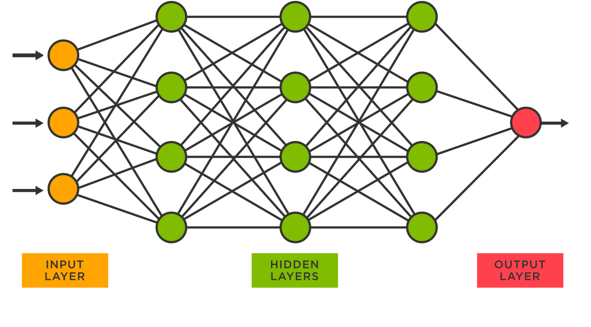
Matrix form
One neuron does a linear combination of the inputs, followed by an activation function: \[\begin{bmatrix} w_1 & w_2 & \dots & w_N & b \end{bmatrix} \cdot \begin{bmatrix} x_1 \\ x_2 \\ \vdots \\ x_N \\ 1 \end{bmatrix} = z \rightarrow \sigma(z) = a\]
\[\begin{bmatrix} w_1 & w_2 & \dots & w_N \end{bmatrix} \cdot \begin{bmatrix} x_1 \\ x_2 \\ \vdots \\ x_N \end{bmatrix} + b = z \rightarrow \sigma(z) = a\]
A layer of \(M\) neurons is just \(M\) neurons next to each other: \[\begin{bmatrix} w_{11} & w_{12} & \dots & w_{1N} & b_1 \\ w_{21} & w_{22} & \dots & w_{2N} & b_2 \\ \vdots & \vdots & \dots & \vdots & \vdots \\ w_{M1} & w_{M2} & \dots & w_{MN} & b_M \\ \end{bmatrix} \cdot \begin{bmatrix} x_1 \\ x_2 \\ \vdots \\ x_N \\ 1 \end{bmatrix} = \begin{bmatrix} z_1 \\ z_2 \\ \dots \\ z_M \end{bmatrix} \rightarrow \sigma(\begin{bmatrix} z_1 \\ z_2 \\ \dots \\ z_M \end{bmatrix}) = \begin{bmatrix} a_1 \\ a_2 \\ \dots \\ a_M \end{bmatrix}\]
\[\begin{bmatrix} w_{11} & w_{12} & \dots & w_{1N}\\ w_{21} & w_{22} & \dots & w_{2N}\\ \vdots & \vdots & \dots & \vdots\\ w_{M1} & w_{M2} & \dots & w_{MN}\\ \end{bmatrix} \cdot \begin{bmatrix} x_1 \\ x_2 \\ \vdots \\ x_N \end{bmatrix} + \begin{bmatrix} b_1 \\ b_2 \\ \vdots \\ b_M \end{bmatrix} = \begin{bmatrix} z_1 \\ z_2 \\ \dots \\ z_M \end{bmatrix} \rightarrow \sigma(\begin{bmatrix} z_1 \\ z_2 \\ \dots \\ z_M \end{bmatrix}) = \begin{bmatrix} a_1 \\ a_2 \\ \dots \\ a_M \end{bmatrix}\]
Each layer is characterized by the weight matrix \(W\) and column \(b\) (separately or joined).
The whole network can be understood as a sequence of matrix multiplications and activation functions.
The next layer takes as inputs the outputs \(a_i\) of the previous layer, and does the same.
2.2 The model
The multi-layer perceptron model contains \(L\) layers, each layer consisting of a matrix multiplication and activation function:
\[\begin{aligned} z^{1} =& W^{1} \cdot X \\ a^{1} =& activation(z^{1}) \\ \\ z^{2} =& W^{2} \cdot a^{1} \\ a^{2} =& activation(z^{2}) \\ ... \\ z^{k} =& W^{k} \cdot a^{k-1} \\ a^{k} =& activation(z^{k})\\ \end{aligned}\]
Here, \(W^{k}\) is a matrix and \(z^{k}\), \(a^{k}\) are vectors (columns). \(k\) refers to layer number \(k\).
The activation function can be the sigmoid, ReLU, tanh etc. Typically the outputs use a sigmoid activation for binary outputs, and a softmax for multi-class outputs (so that the class scores sum to 1), whereas the hidden layers can use whichever activation function the designer prefers.
sigmoid activation function: \[f(z) = \sigma(z) = \frac{1}{1 + e^{-z}} = \frac{e^z}{e^z + 1}\]
ReLU (“Rectified Linear Unit”): \[f(z) = \begin{cases} z &, \textrm{ if } z \geq 0 \\ 0 &, \textrm{ if } z < 0 \end{cases}\]
Hyperbolic tangent:
\[f(z) = \tanh(z) = \frac{e^{z}-e^{-z}}{e^{z}+e^{-z}}\]
Inputs:
- a matrix \(X\) with every input vector being a column (according to the equations below; we can also transpose all matrices and vectors, if we want).
Outputs (assuming one-hot encoding):
- a vector \(\hat{y}\) which should be understood as scores/probability of belonging in each class
- the location of the maximum value gives the predicted class
2.3 The model parameters
The model parameters are the weight matrices \(W^{k}\) of every layer. The element \(w^{k}_{ij}\) is the weight in the \(k\)-th layer, \(i\)-th neuron, \(j\)-th input of it.
Every neuron has a bias input. We presume that the bias is included in the weight matrices, like we did until now (e.g. like a fake input equal to 1 is appended to the input of every layer).
Example parameter count: input size 100 \(\rightarrow\) hidden layer with 1000 neurons \(\rightarrow\) output layer with 4 neurons.
- Layer 1 parameters: \((100 + 1) \times 1000 = 101{,}000\) (weights + biases)
- Layer 2 parameters: \((1000 + 1) \times 4 = 4{,}004\)
- Total parameters: 105{,}004
2.4 The cost function
For classification, the cross-entropy loss function is typically used. For a single input, whose output is a vector \(\hat{y} = [\hat{y}_1, \dots, \hat{y}_N]\) (assuming \(N\) classes) and true output should have been \(y = [y_1, \dots, y_N]\), the cross-entropy function is defined as:
\[L(y, \hat{y}) = - \sum_{i=1}^{N} y_i \log{\hat{y}_i} = -\log{\hat{y}_{\text{true class}}},\]
where \(\hat{y}_{\text{true class}}\) is the model’s predicted probability for the true class of the input. We assume one-hot encoding, i.e. the vector \(y\) has a single value of 1 and all the others are 0.
For binary classification (a single output), use the binary cross-entropy:
\[L(y, \hat{y}) = - \big( y \log{\hat{y}} + (1-y)\log{(1-\hat{y})} \big)\]
For several inputs (a “batch”), do the average of all losses: \[J = \frac{1}{N} \sum_i L(y^i, \hat{y}^i)\]
2.5 Training
Training is done with backpropagation and gradient descent (or some variant of it).
Backpropagation = the technique to compute the derivatives of \(J\) with respect to all parameters in the network.
Backpropagation
Assume we have a network with 4 layers.
\[\begin{aligned} z^{1} =& W^{1} \cdot X \\ a^{1} =& activation(z^{1}) \\ \\ z^{2} =& W^{2} \cdot a^{1} \\ a^{2} =& activation(z^{2}) \\ \\ z^{3} =& W^{3} \cdot a^{2} \\ a^{3} =& activation(z^{3}) \\ \\ z^{4} =& W^{4} \cdot a^{3} \\ a^{4} =& activation(z^{4}) \end{aligned}\]
The final results \(a^{4}\) are the outputs \(a^{4} = \hat{y}\).
Just like in logistic regression, we can compute the derivatives for the final layer, \(\frac{dJ}{dW^{4}}\) and \(\frac{dJ}{da^3}\)
For the third layer, we compute its own derivatives, \(\frac{da^{3}}{dW^{3}}\) and \(\frac{da^{3}}{da^2}\). Together with the \(\frac{dJ}{da^3}\) received as inputs from the above layer, we have:
\[\frac{dJ}{dW^{3}} = \frac{dJ}{da^3} \cdot \frac{da^{3}}{dW^{3}}\] and \[\frac{dJ}{da^{2}} = \frac{dJ}{da^3} \cdot \frac{da^{3}}{da^{2}}\]
For the second layer, we compute its own derivatives, \(\frac{da^{2}}{dW^{2}}\) and \(\frac{da^{2}}{da^1}\). Together with the \(\frac{dJ}{da^2}\) received as inputs from the above layer, we have:
\[\frac{dJ}{dW^{2}} = \frac{dJ}{da^2} \cdot \frac{da^{2}}{dW^{2}}\] and \[\frac{dJ}{da^{1}} = \frac{dJ}{da^2} \cdot \frac{da^{2}}{da^{1}}\]
Finally, the input layer computes its own derivatives, \(\frac{da^{1}}{dW^{1}}\), and together with the \(\frac{dJ}{da^{1}}\) received from the layer above, computes: \[\frac{dJ}{dW^{1}} = \frac{dJ}{da^1} \cdot \frac{da^{1}}{dW^{1}}\]
In backpropagation, each layer (each operation, really) does the following:
- Has some inputs I, parameters P, and outputs O.
- Knows how to compute its own derivatives \(\frac{dO}{dP}\) and \(\frac{dO}{dI}\).
- Receives as input from the next layer the quantity \(\frac{dJ}{dO}\).
- Computes \(\frac{dJ}{dP} = \frac{dJ}{dO} \cdot \frac{dO}{dP}\). This will be used in Gradient Descent.
- Computes \(\frac{dJ}{dI} = \frac{dJ}{dO} \cdot \frac{dO}{dI}\) and passes them back to the preceding layer.
Backpropagation is a computational graph (sequence of operations) not unlike the model itself is just a sequence of operations. The only difference is that the data travels backwards, from the network output towards its input. The “data” here is the gradients (derivatives).
Training the model means repeating the two passes:
- Forward pass: run the model (from the inputs, and current parameters, compute the outputs and the cost function)
- Backward pass: backpropagation + gradient descent (from the cost function, compute gradients and update parameters, going backwards to the input)
- Repeat
After the gradients are calculated, we can update the parameters.
Gradient descent refers to the typical update rule \(W = W - \mu \frac{dJ}{dW}\). There exist also some smarter variations of it.
2.6 Matlab functions for working with neural networks
Toy Example setup
Let’s generate some data points belonging in 3 classes, situated around central points (2,2), (1,-1) and (-1,1):
We do one hot encoding of the output vector Y. In R2020b we can use the function onehotencode(). In previous versions, we can use the function ind2vec().
[X,Y] = make_data([2 2; 1 -1; -1,1]);
Yonehot = onehotencode(categorical(Y),2);Neural Net tools
- for classification:
nprtool()(Neural Net Pattern Recognition) - for regression:
nftool()(Neural Net Fitting) nnstart(): entry-point for both of the above
Important: These functions expect each sample as a column. If your data matrix has samples as rows, transpose it (e.g. use X').
Open
nprtooland select input and output data. Outputs must be one-hot encoded.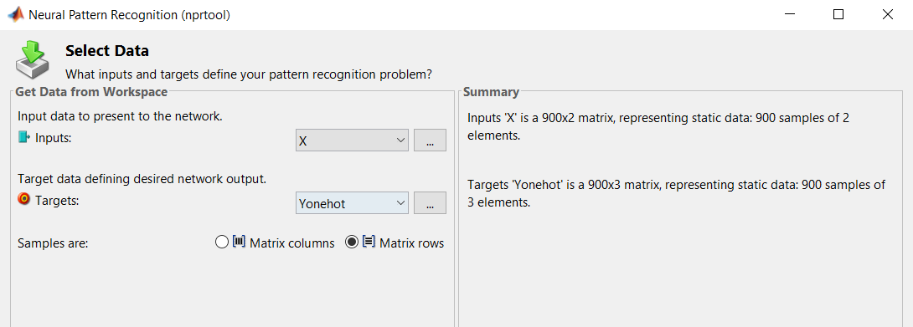
Select Training, Validation and Test set size.
The training set contains the data used for the actual training.
The validation set contains the data used to stop the training before over-fitting (over-learning). For a fair decision, for validation we use data which is not used for actual training.
The testing set contains the data used for the final testing of the final trained model. For a fair result, we use data which the network has never seen until now (neither in training nor for validation).
Default values for small datasets are around 70% / 15% / 15%. For larger datasets (tens of thousands of input vectors), we can use smaller amounts for validation and testing.
These three sets of data are selected randomly from the overall available dataset, for fairness.
Select hidden layer size. Output layer size is determined by the number of output classes.
In general, pick an intermediate value between size of input and size of output, so that the network has an overall decreasing size towards the output.
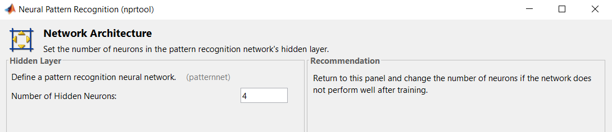
Run Train
Evaluate outputs: Error, Confusion matrix, etc.
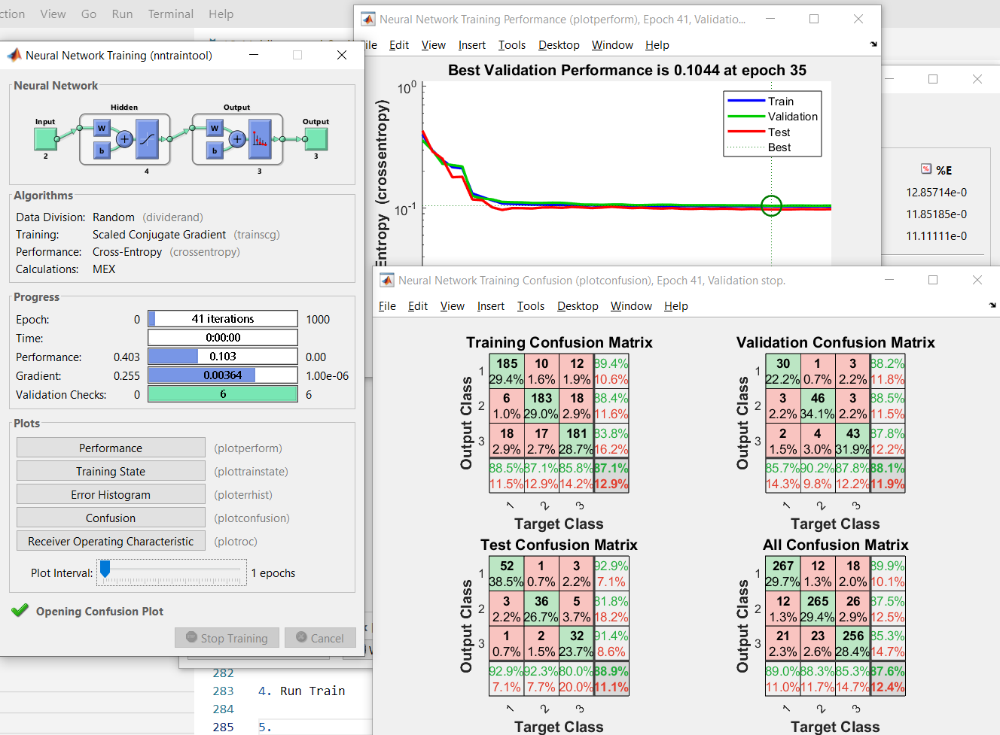
Click Next and deploy the neural network as a Matlab function
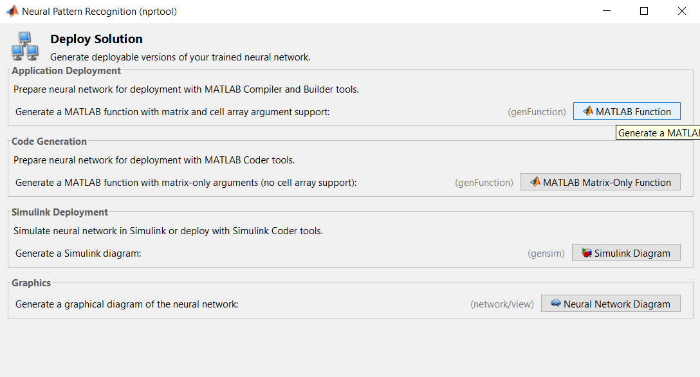
Call the function for a new input. It returns the network output, i.e. the score for each class.
The higher score is the predicted class.
myNeuralNetworkFunction([1,2]) ans = 0.8166 0.0117 0.1716
Classification Learner
Use the same Classification Learner tool introduced last time, and load the data.
Select a Neural Network classifier.
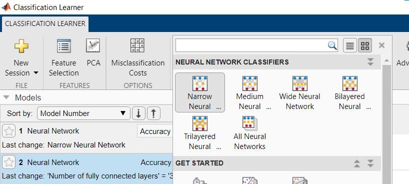
You can select more advanced parameters (number of layers, size of layers, type of activation function)
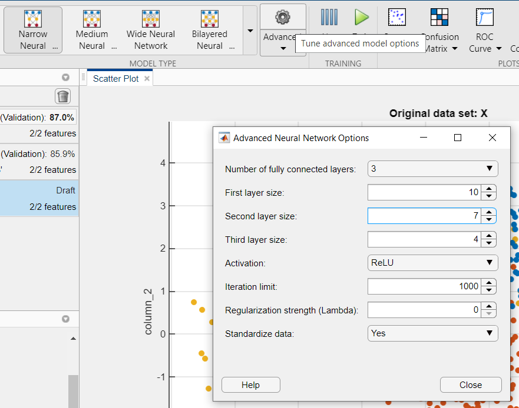
Inspect outputs (e.g. Confusion matrix)
Export model
Call the model’s predict functions:
trainedModel.predictFcn([-1,2])
The patternnet() function
For more fine-grained control, you can use the patternnet() function. Read its documentation to see more details.
Note: All the data vectors should be column vectors.
% Construct a pattern network with two hidden layers of sizes 8 and 4
net = patternnet([8 4]);
% Train the network net using the training data (outputs are one-hot-encoded).
% Use the default training algorithm.
net = train(net,X',Yonehot');
% View the trained network.
view(net);
% Predict using the trained network. Pass a column vector!
y = net([-1; -1])3 Practical work
3.1 Split
In Week 1:
- Exercise 1
- Exercise 2
- Exercise 3 (fast)
In week 2, do/redo with greater care:
- Exercise 0
- Exercise 3 - train and run on the test images as well
- Exercise 4 - independently
3.2 Exercise 0 - Manual calculations
Consider a neural network with the following architecture:
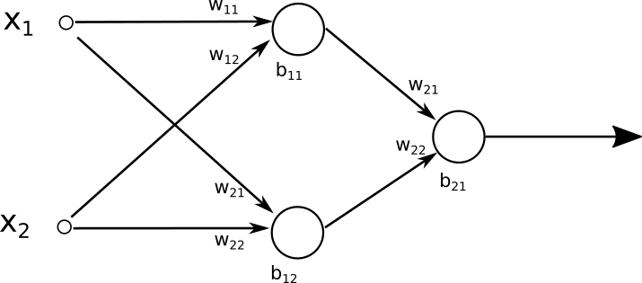
The network parameters are:
- hidden layer: \(W^{1} = \begin{bmatrix} 2 & -0.5 \\ -1 & 1.5 \end{bmatrix}\), \(b^{1} = \begin{bmatrix} 0.25 \\ 0.25\end{bmatrix}\)
- output layer: \(W^{2} = \begin{bmatrix} 0.5 & -1 \end{bmatrix}\), \(b^{2} = 2\)
Both the hidden layer and the output layer have sigmoid activation function.
Compute the network output for the input \(x = \begin{bmatrix} 0.5 \\ 1 \end{bmatrix}\)
Compute the network output for the same input, considering that the hidden layer has ReLU activation instead (output layer still sigmoid)
Compute the cost function (i.e. the loss), assuming the true output should have been \(y = 0\).
Compute the cost function (i.e. the loss), assuming the true output should have been \(y = 1\).
Suppose we have a network with input size 100, one hidden layer with 1000 neurons, and one output layer with 4 neurons.
How many parameters has the network? Compute the number of parameters for every layer.
3.3 Exercise 1 - Wine classification - nprtool
We shall work with the same wine_dataset data as in the first labs. The last column gives the quality score. We shall treat the quality score as a class indicator. We shall perform classification with a multilayer network model, aiming to classify correctly the quality of a wine based on its parameters.
Prepare the data
Load the
wine_datasetin Matlab, and consider the following:- how many inputs are there?
- how many output categories?
- how many hidden neurons should we use?
Data = readmatrix('winequality-red.csv'); X = Data(:,1:11); % 11 columns for the inputs N = size(Data,1); % The number of wines in the set (1599) Y = Data(:,12) ; % 12th column the qualityWe do one hot encoding of the output vector Y. In R2020b we can use the function
onehotencode(). In previous versions, we can use the functionind2vec().% Reindex so that quality 3 -> class 1, quality 4 -> class 2, etc. Yenc = full(ind2vec((Y' - 2))); Yenc = Yenc'; % Transpose, so each value corresponds to a row, just like the input dataStart the
nprtool()and train a neural network to predict the wine quality.Display the following evaluation metrics:
- Number of epochs and final error value
- Error plot
- Confusion matrix
- Receiver Operating Characteristic
Go back and change the hidden layer size to 20, 50, then 5. Do the results change significantly?
3.4 Exercise 2 - Wine classification - Classification Learner
Use the Classification Learner app to train a similar model with two hidden layers with sizes 9 and 8.
3.5 Exercise 3 - Handwritten digit classification on MNIST
We follow the MNIST training tutorial from https://www.mathworks.com/matlabcentral/fileexchange/73010-mnist-neural-network-training-and-testing
Unzip the MNIST data file
MNISTdata.zipprovided with the lab.Load the data (this will create the matrix
mnist_train):load mnist_train.csvThe first column is the digit number. The remaining 784 columns contain the pixels in the linearized image (every image has 28x28 pixels).
Lookup the MNIST database on the Internet to see how the images look like.
Prepare the inputs and outputs. Check the sizes of the resulting arrays to understand what they contain.
X = mnist_train(:,2:end); Y = mnist_train(:,1); % digits are 0 to 9, add 1 so that class indices are 1 to 10 (10 classes) Yenc = full(ind2vec(1 + Y')) % Transpose, so each value corresponds to a row, just like the input data Yenc = Yenc';Use
patternnet()to design and train a neural network with two layers of sizes 80 and 60.Note: Training a real-life network may take some time. Have patience until training is finished.
You can look at the performance and confusion matrix updating live as training progresses.
When training is finished:
- Display the error plot. Do you notice the overfitting? This is what validation is good for.
- Display the confusion matrix. What is the classification accuracy (percentage of correctly classified images) on the testing set?
Load the test file
mnist_test.csvand predict the class of the first data sample. Is the class correct?Play with parameters. Change the network architecture: use a single hidden layer, change the number of neurons, etc. Compare the results:
- When is the accuracy greater?
- When is overfitting more of a problem?
Optional: Use the model to predict the digit from your own hand-drawing.
Draw a digit similar to the ones in the dataset (this amounts to the preprocessing of the image):
- Draw a letter using the mouse, in MS Paint
- Make sure the digit is around the center of the image, has the same brush width compared to the image as the ones in the dataset
- Save it as a grayscale image
- Resize the image to 28x28 pixels
- You should get an image similar to the ones in the dataset
Read the image in Matlab:
- Use
imread()to load the image - Convert to double with (
double()) - Linearize the matrix in a row-major order (row by row), e.g.:
Ivec = I'(:)
Identify (predict) the digit using the network:
net(Ivec)Was the result correct?
3.6 Exercise 4 - Classifying wheat seeds (independent work)
Do a similar analysis on a new database, seeds.csv. It contains measurement data of seeds coming from three types of wheat grains.
Start from the template file in Ex4_Template.m and fill in the blanks.
Use 1 hidden layer with 50 neurons, and run the training for 1000 epochs.
- Does overfitting happen? (Yes / No)
- At which epoch did the training actually stop?
Normalization or not.
Use 1 hidden layer with 10 neurons, but run with and then without data normalization. Which case produces the best results?
Architecture experimentation:
Use a single hidden layer with different sizes: 5, 10, 15, 25, 100. Which case gives the best classification accuracy on the test set?
Architecture experimentation:
Adjust number of hidden layers (1, 2, 3, 5, 8), keeping 10 neurons in each layer. Which case gives the best classification accuracy on the test set?
4 Final questions
How many parameters does the network used for MNIST classification have?
How many parameters would have a network used for classifying color images with 1024 x 768 resolution, into 10 output classes, using two hidden layers of size 2000 and 150?